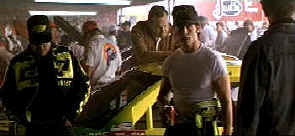

|
Days
of Thunder/C,D- |
|
Paramount/1990/107m/WS
2.35 |
Is there even a lap of originality in Days of
Thunder? I could find any except maybe naming the main character
Cole Trickle. What was the thinking here? There is just
something hilarious about trickling around the track at
breakneck speeds. Is the concept an oxymoron?
So, what's it all about besides cars racing
around a track at furious speeds to the accompaniment of throaty
engines? The dream of every used car lot owner is race is take
some of the bombs that show up on the lot and turn them into
mega horsepower stock car champs. Tim Daland tries to realize
his dream with the help of legendary car builder and crew
chief Harry Hogge. Enter Trickle, a young driver who
needs to prove himself.
 |
|
Working
out the Trickle kinks. ©Paramount |
There are some great laps, a heap of crashes, lots of juvenile
behavior, a doctor to the rescue, and male bonding. The big question
at the checkered flag is how many revolutions around the track do
you want to spend with these characters.
Tony Scott revs up the images with slick
photography and hairpin editing, but the script leaves little room
to open up his engines. Tom Cruise is attractive as Trickle, Nicole
Kidman has some screen sizzle as Dr. Claire Lewicki and Robert
Duvall must have gotten a fat pay check as Hogge. Rand Quaid, Michael Rooker
and Cary Elwes fill the track with supporting actors.
This
is pretty close to the bottom of the DVD barrel. The
over-enhancement is simply an embarrassment and makes Days of
Thunder even harder to watch than the dull material would suggest.
Edge jitter runs rampant, turning whatever excitement the track
scenes might generate into a blur. The enhancement is so distorting
it’s
even difficult to read the multitude of logos on the race driver
uniforms. You do get the thunder, however. The racetrack ambiance is
blasted about with little subtlety on the Dolby Digital 5:1 mix, but then, I guess nothing about
Days of Thunder is subtle.
|
|

The
Feature
Archive has articles ranging from Akira
Kurosawa to Blonde
Bimbos and John
Ford.

Click on the image of The
Heistmasters for an interesting feature on the tough guys
that pull off the big jobs.

The
Movie Poster Archive include extensive poster images from the
films of stars like Susan Hayward, Kirk Douglas, Katharine
Hepburn and many more. This month's featured star is Edward
G. Robinson

 Black
DVD Online is a new site
dedicated to black film content on DVD. The commendable enterprise
is hosted by Webmaster Samuel L. McLemore, Jr. and presented in an
attractive interface. Black
DVD Online is a new site
dedicated to black film content on DVD. The commendable enterprise
is hosted by Webmaster Samuel L. McLemore, Jr. and presented in an
attractive interface.
 Direct
from the corridors of the Home
Theater Forum, Home Theater Talk is
the newest place on the Net to
discuss everything home theater.
Friendly atmosphere and
knowledgeable folks are the secret
ingredients. Direct
from the corridors of the Home
Theater Forum, Home Theater Talk is
the newest place on the Net to
discuss everything home theater.
Friendly atmosphere and
knowledgeable folks are the secret
ingredients.
 Elite
Entertainment President
Vini Bancalari talks about his
horror roots with DVD Unleashed.
Find out why Vini has started a new
DVD enterprise, Focus Film
Entertainment. Watch for
Sherlock Holmes coming into focus on
DVD. Click DVD Unleashed to read all
about it. Elite
Entertainment President
Vini Bancalari talks about his
horror roots with DVD Unleashed.
Find out why Vini has started a new
DVD enterprise, Focus Film
Entertainment. Watch for
Sherlock Holmes coming into focus on
DVD. Click DVD Unleashed to read all
about it.
|